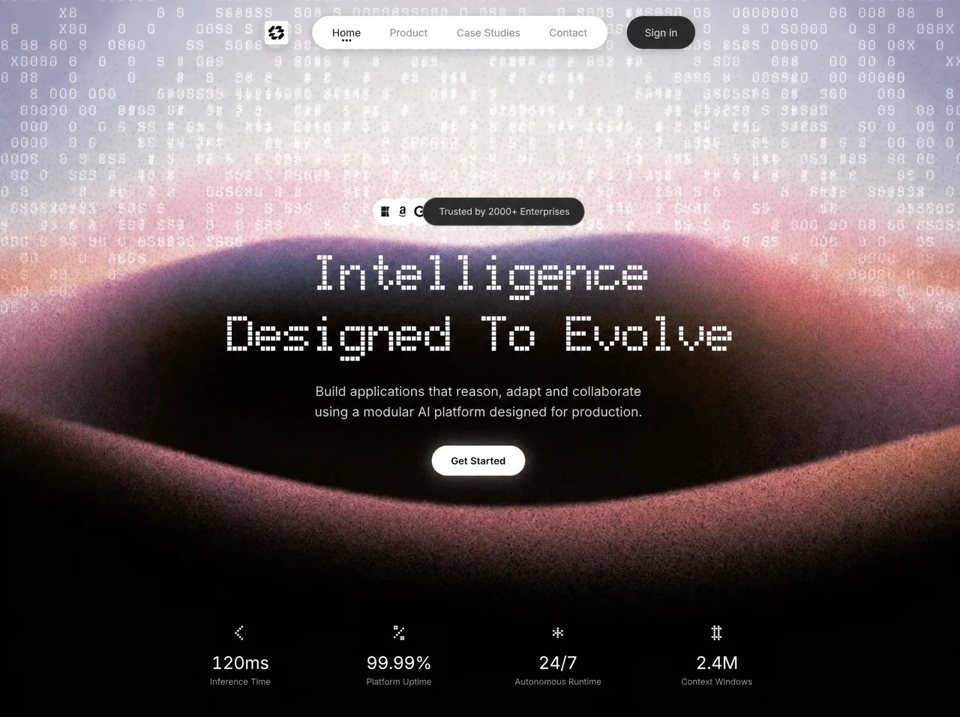

AI Runtime
AIaiyilai-ai 公开页面
收录时间：2026-08-14正文：9,834 字符

本地预览图 · jpeg
完整提示词
Rebuild this as a **single-viewport, full-bleed video-background landing page** using static **HTML + CSS + vanilla JS** (no framework). Match the current implementation exactly. File structure:
```
index.html
styles.css
main.js
assets/logo.webp
fonts/GeistPixel-Circle.woff2
```
Document title: `Intelligence Designed To Evolve`.
Body: black `#000`, `overflow: hidden`, height `100vh` / `100dvh`, Inter for UI, retro dot-matrix display font for headline + stat symbols. Antialiased text.
---
## Exact background video (required)
Full-viewport cover video behind all UI (`position: absolute; inset: 0; object-fit: cover; pointer-events: none; z-index: 0`).
```html
<video class="bg-video" autoplay muted loop playsinline>
<source
src="https://d8j0ntlcm91z4.cloudfront.net/user_38xzZboKViGWJOttwIXH07lWA1P/hf_20260809_012548_ef22562c-c0ae-4816-ad9d-f8922af4e6a7.mp4"
type="video/mp4"
/>
</video>
```
Use this **exact CloudFront URL**. Parent `.bg` is black `#000`, absolute inset 0, `overflow: hidden`.
---
## Fonts (exact)
**1. Inter** (UI) via Google Fonts: weights `400`, `500`, `600`
`https://fonts.googleapis.com/css2?family=Inter:wght@400;500;600&display=swap`
Stack: `"Inter", "Segoe UI", system-ui, sans-serif`
**2. BubbledotICG-FinePos** (primary display — retro dot-matrix) via OnlineWebFonts CDN — **do not use local Bubbledot files**:
```html
<link
href="https://db.onlinewebfonts.com/c/8cb707a9b8a73f8a7403336b861c3074?family=BubbledotICG-FinePos"
rel="stylesheet"
/>
```
Family name exactly: `"BubbledotICG-FinePos"`
**3. Geist Pixel Circle** (fallback display only) local `@font-face`:
- `fonts/GeistPixel-Circle.woff2`
- weight 400, `font-display: swap`
- Display stack: `"BubbledotICG-FinePos", "Geist Pixel Circle", monospace`
**4. Font Awesome 6.5.2** (enterprise brand icons) from cdnjs:
```
https://cdnjs.cloudflare.com/ajax/libs/font-awesome/6.5.2/css/all.min.css
```
integrity:
`sha512-SnH5WK+bZxgPHs44uWIX+LLJAJ9/2PkPKZ5QiAj6Ta86w+fsb2TkcmfRyVX3pBnMFcV7oQPJkl9QevSCWr3W6A==`
---
## CSS variables (exact)
```css
--bg: #000000;
--text: #ffffff;
--muted: #8e8e8e;
--nav-text: #2e2e2e;
--pill-dark: #28282a;
--sign-in-text: #c8c8c8;
--nav-shadow: 0 4px 14px rgba(0, 0, 0, 0.16);
--trust-bg: #28282a;
--trust-border: rgba(255, 255, 255, 0.4);
--trust-text: #c4c2c3;
--font-sans: "Inter", "Segoe UI", system-ui, sans-serif;
--font-display: "BubbledotICG-FinePos", "Geist Pixel Circle", monospace;
```
---
## Layout composition (one viewport, 3 vertical regions)
`.page`: flex column, centered, padding `clamp(16px, 2.4vh, 28px) clamp(14px, 3vw, 32px)`, height `100vh`/`100dvh`, overflow hidden.
1. **Header** (top, shrink 0)
2. **Hero** (flex 1, centered)
3. **Stats footer** (bottom, shrink 0)
Header / hero / stats / mobile menu: `z-index: 1` above video.
---
## 1) Header (desktop)
Centered row, max-width `720px`, gap `clamp(18px, 2.8vw, 28px)`.
### Logo
- Circular button `clamp(40px, 4.4vw, 46px)`, `border-radius: 50%`
- **White background `#fff`**
- Soft shadow `--nav-shadow`
- Image: `assets/logo.webp` (alt empty; width/height attrs 52)
- Icon **inside** scaled to **72%** width/height, `object-fit: contain`, centered with CSS grid (circle size unchanged)
- Hover: `scale(1.04)`
### Nav pill (white)
- White `#fff` pill, height `clamp(44px, 5.2vw, 48px)`, max-width `430px`, flex 1, padding `4px 8px`, radius 999, same soft shadow
- Links: **Home** (active), **Product**, **Case Studies**, **Contact**
- Inter 500, size `clamp(13px, 1.4vw, 15px)`, letter-spacing `-0.01em`, color `#2e2e2e`
- Default opacity `0.5`; hover `0.75`; active `1`
- Active indicator: three 3×3px black dots under label via `::after` + box-shadow offsets `-5px` / `+5px`, bottom `5px`
### Sign in
- Dark pill `#28282a`, text `#c8c8c8`, same height as nav, radius 999, soft shadow
- Hover: bg `#323234`, text `#fff`, `translateY(-1px)`
### Entrance animation
Header: `slideDown 0.7s cubic-bezier(0.22, 1, 0.36, 1) both`
(from opacity 0, `translateY(-18px)` → settled)
---
## 2) Hero (center)
Column, text-center, max-width `900px`.
### Trust row (“Trusted by 2000+ Enterprises”)
- Inline flex; `--trust-size: clamp(36px, 4.5vw, 42px)` (34px at ≤420px)
- Margin-bottom `clamp(16px, 2.5vh, 26px)`
- Stagger delay `--d: 0.05s`
**Three overlapping avatar rings** (not full solid white disks):
- Outer ring: size `--trust-size`, bg `#28282a`, border `1px solid rgba(255,255,255,0.4)`, **padding `5px`**
- Inner white circle fills the padded area (`border-radius: 50%`, bg `#fff`)
- Icons (black `#111`) via Font Awesome brands, font-size `calc(var(--trust-size) * 0.34)`:
1. `fa-brands fa-microsoft`
2. `fa-brands fa-amazon`
3. `fa-brands fa-google`
- Overlap: later avatars `margin-left: calc(var(--trust-size) * -0.42)`; z-index 1 / 2 / 4
- Hover lift: a1 `-2px`, a2 `-4px`, a3 `-2px` (0.35s)
**Trust pill** (overlaps last avatar):
- Same height as avatars, bg `#28282a`, border same as avatars, radius 999
- Left margin `-0.42 * trust-size`; left padding `0.58 * trust-size` so text clears overlap
- Text: `Trusted by 2000+ Enterprises` — Inter 500, `#c4c2c3`, size `clamp(12px, 1.4vw, 13.5px)` (12px on mobile)
### Headline
Exact two lines (each a `<span>` block):
```
Intelligence
Designed To Evolve
```
- Font: **BubbledotICG-FinePos** (retro dot-matrix) / Geist Pixel Circle fallback
- Solid **white** (NO gradient, NO shimmer/LED scan)
- Size desktop: `clamp(28px, 6.2vw, 80px)`
- Letter-spacing: **`-0.04em`** desktop; **`-0.08em`** ≤720px; **`-0.09em`** ≤420px
- Line-height 1.12 (1.05 / 1.04 on smaller breakpoints)
- `white-space: nowrap`, overflow hidden
- Per-line fade: opacity 0 + `translateY(14px)` → in via `headlineFade 0.85s cubic-bezier(0.22, 1, 0.36, 1)`
delays: line1 `0.12s`, line2 `0.3s`
(parent `.headline.anim` has no reveal animation itself)
### Subhead (exact copy)
```
Build applications that reason, adapt and collaborate using a modular
AI platform designed for production.
```
- Max-width `min(500px, 92%)`
- Font-size: `clamp(calc(13.5px + 2pt), calc(1.55vw + 2pt), calc(16.5px + 2pt))` ← base + **2pt**
- Color `#d0d0d0`, **opacity `0.8`**
- Line-height 1.55, weight 400
- Delay `--d: 0.28s`
### CTA
- Text: `Get Started`
- White pill, black text, Inter 600, size `clamp(13.5px, 1.5vw, 14.5px)`
- Padding `clamp(11px, 1.6vh, 13px) clamp(22px, 3vw, 28px)`, radius 999
- Soft white glow:
`0 0 0 1px rgba(255,255,255,0.15), 0 0 22px rgba(255,255,255,0.32), 0 0 44px rgba(255,255,255,0.12)`
- Hover: `translateY(-2px) scale(1.02)` + stronger glow
- Entrance uses `revealPulse` (not plain reveal); delay `--d: 0.4s`
---
## 3) Stats footer (exact 4 metrics)
Grid 4 cols (2×2 on ≤720px), max-width `920px`. Each: icon (display font white) → counting value → muted label.
| Icon glyph | Target | Suffix | Decimals | Label |
|---|---|---|---|---|
| `<` | 120 | `ms` | 0 | Inference Time |
| `%` | 99.99 | `%` | 2 | Platform Uptime |
| `*` | 24 | `/7` | 0 | Autonomous Runtime |
| `#` | 2.4 | `M` | 1 | Context Windows |
- Icon size `clamp(22px, 3vw, 33px)`, **BubbledotICG-FinePos**
- Value: Inter, white, `clamp(18px, 2.2vw, 26px)`, letter-spacing `-0.025em`, tabular-nums
- Label: `#8e8e8e`, `clamp(11px, 1.2vw, 12.5px)`
- Stagger delays: `0.5s`, `0.58s`, `0.66s`, `0.74s`
- Count-up JS: easeOutCubic, duration `1500 + i*80`ms, start offset `480 + i*90`ms, once via IntersectionObserver threshold `0.25`
---
## Shared entrance animation
`.anim` elements:
- Start: opacity 0, `translateY(22px) scale(0.98)`, `blur(6px)`
- Animate: `reveal 0.85s cubic-bezier(0.22, 1, 0.36, 1) forwards`
- Delay from inline `--d`
`prefers-reduced-motion: reduce`: kill animations; show final state; headline solid white.
---
## Mobile (≤720px) — exact behavior
- Hide desktop nav + desktop Sign in
- Header: space-between; logo 48×48 left; circular burger 48×48 right (`#28282a`, 3 white 18×1.5px bars)
- Burger open: white circle, bars → black X (translateY ±6.5px + rotate ±45°)
- Overlay: fixed full screen, `rgba(0,0,0,0.62)`, blur 6px, `overlayIn 0.28s`
- White sheet menu: centered under header, radius 28px, padding `22px 18px 20px`, shadow `0 20px 60px rgba(0,0,0,0.45)`, `menuIn 0.38s`
- Links: Home / Product / Case Studies / Contact + full-width Sign in; staggered `linkIn`; active three-dot indicator at bottom 8px
- JS: toggle `aria-expanded`, `hidden`, `body.menu-open`; close on overlay click, Escape, link click, resize >720
- Stats → 2 columns
Also: ≤420px headline/trust tweaks; ≤700px height tighten hero spacing.
---
## Visual / interaction constraints (do not deviate)
- **No cards** in hero; one composition; brand logo is a real circular mark, not text-only
- **No gradient animation** on headline — solid white only
- Display type is **BubbledotICG-FinePos** from OnlineWebFonts (retro dot-matrix), **not** local Bubbledot.woff/ttf
- Trust logos are **small white inner circles** inside dark padded rings (same size language as the old inner gradient dots), **not** full-bleed white outer circles
- Soft nav/logo shadow only: `0 4px 14px rgba(0,0,0,0.16)` (not heavy)
- Page must work on desktop and mobile; first viewport = header + trust + headline + subhead + CTA + stats over the looping CloudFront video
---
## Implementation stack
Plain `index.html` + `styles.css` + `main.js`. No React/build step required. Copy local `assets/logo.webp` and `fonts/GeistPixel-Circle.woff2`. Load **Inter**, **BubbledotICG-FinePos** (OnlineWebFonts), and **Font Awesome 6.5.2** from CDNs as specified. Use the **exact** CloudFront MP4 URL above for the background video.把上面的提示词完整复制到支持长文本的 AI 工具中，再按需要替换品牌名、配色与文案。提示词描述的是整页结构与动效节奏，生成后建议在真实浏览器里检查首屏加载和移动端表现。
来源与版权
该条目来自公开提示词页面，原始出处信息未随页面提供。
提示词文本与预览素材的版权归原作者或原平台所有，本站仅作索引与归档。若你是权利人并希望移除本条内容，请通过联系方式告知。